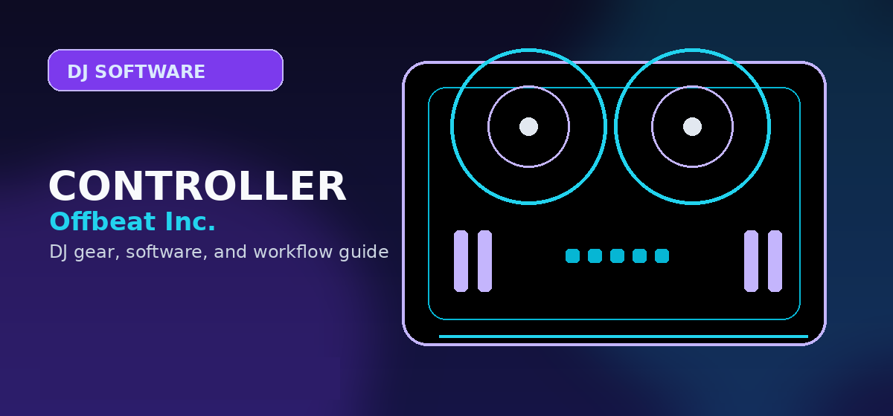

Numark Scratch Review 2026: The Best Value Serato Scratch Controller?
Comprehensive guide to Numark Scratch review 2026 Serato best scratch controller value with practical recommendations and current buying notes — updated 2026.

Disclosure: This page uses affiliate links. We may earn a commission at no extra cost to you. Full disclosure →
Learning the art of scratching in 2026 doesn't require a multi-thousand dollar investment in vintage Technics 1200s and heavy mixers. For aspiring turntablists and bedroom DJs, the Numark Scratch remains the most accessible entry point into the world of Serato. While the DJ market has shifted toward all-in-one controllers, the Numark Scratch doubles down on the fundamentals: high-resolution platters and a dedicated crossfader. In an era where budget gear often compromises on core tactile feedback, this controller manages to bridge the gap between "toy" and "tool." Whether you are practicing basic baby scratches or diving into complex flares, the Numark Scratch provides the necessary physical interface to build muscle memory without the financial risk of professional DVS hardware.
Build Quality and Tactile Design
The Numark Scratch is designed for the "bedroom-to-booth" transition. Its chassis is primarily high-impact plastic, which keeps the weight low and the price point competitive—typically retailing around $299. The standout feature is the pair of high-resolution platters that mimic the feel of vinyl. While they lack the weighted inertia of a real record, they offer precise tracking and low latency, essential for timing your cuts. The mixer section is streamlined, providing essential EQ knobs and gain controls that allow beginners to understand signal flow. While the build isn't "tour-grade," it is rugged enough to survive daily practice sessions, making it a reliable workhorse for those who prioritize function over luxury materials.
Serato Integration and Performance
Integration is where the Numark Scratch excels. As a native Serato hardware piece, it offers a seamless plug-and-play experience with Serato DJ Lite and Pro. In 2026, Serato's software stability is industry-leading, and the Numark Scratch leverages this perfectly. The mapping is intuitive, allowing users to trigger samples and manipulate loops without glancing at a laptop screen. The latency is negligible, which is critical when the difference between a clean cut and a muddy transition is measured in milliseconds. For those upgrading from a laptop-only setup, the tactile control over the decks allows for a much more organic expression of rhythm and style than any MIDI keyboard or mouse could provide.
Value Comparison: Specialist vs. Generalist
When compared to generalist controllers like the Pioneer DDJ-FLX4, the Numark Scratch takes a specific architectural path. While the FLX4 offers more "performance pads" and a wider array of mixing tools, it lacks the dedicated platter focus required for genuine scratching. The Numark Scratch isn't trying to be a full-fledged club mixer; it is a training tool. For under $300, it provides a dedicated scratching environment that would otherwise cost four times as much in a traditional vinyl setup. It occupies a unique niche in the 2026 budget market: it is the only controller that treats the platter as the primary instrument rather than a secondary navigation tool.
The Learning Curve and Ideal User
The Numark Scratch is specifically engineered for the beginner who is intimidated by the complexity of professional DVS (Digital Vinyl System) setups. The learning curve is shallow, allowing users to start their first routine within minutes of unboxing. It is ideal for hip-hop enthusiasts, producers using Ableton Live or FL Studio who want to record organic scratches into their DAW, and hobbyists who want a compact footprint. As a user progresses, the Numark Scratch serves as an excellent "bridge" device; once the muscle memory is established here, transitioning to professional battle mixers or real turntables becomes a matter of scaling up the gear rather than relearning the technique.
2026 Budget Controller Comparison
| Feature | Numark Scratch | Pioneer DDJ-FLX4 | Pro DVS Setup (Used) |
|---|---|---|---|
| Est. Price | $299 | $329 | $1,200+ |
| Focus | Pure Scratching | General Mixing | Professional Performance |
| Platter Feel | High-Res/Tactile | Small/Navigational | Authentic Vinyl |
| Software | Serato DJ Lite/Pro | Rekordbox/Serato | Serato Pro/Traktor |
| Portability | High | High | Low |
| Value Score | 10/10 | 8/10 | 6/10 (for beginners) |
Pros & Cons
✅ Pros
- Purpose-built for scratch workflow at a budget price (~$299)
- Large 7" jog wheels for a controller in this price range
- Works with Serato DJ Lite (included) or Serato DJ Pro
- Platter sensitivity adjustable via Serato panel
- Compact and lightweight for beginner home setups
❌ Cons
- Build feels plasticky vs Rane One or DDJ-FLX6
- Limited FX controls vs higher-end controllers
- Serato DJ Pro upgrade costs extra ($149)
- No standalone operation — requires a laptop
- Mix outputs are not ideal for professional booth use
Key Specs
Quick Verdict
Best entry-level scratch controller in 2026 — the Numark Scratch gives novice DJs real scratch performance at an accessible price. Upgrade to a Rane One when your budget allows. Search Numark Scratch DJ controller on Amazon →
Shop on Amazon
Find Numark DJ gear on Amazon — turntables, controllers, and scratch tools.
Also Available on zZounds
Motorized 4-deck controller — financing available.
Who Should Buy This?
Numark Scratch Review 2026 is the right choice if you want professional-grade quality that will last through years of regular use. It suits DJs who have moved past entry-level gear and need something that can handle club environments and regular touring.
- Ideal for: intermediate to advanced DJs upgrading from a first controller
- Not ideal for: first-time buyers on a tight budget who should start with a more forgiving entry-level option
- Best purchased from: an authorised retailer with warranty coverage
Mastering the Platter: Scratch Technique and Feel
The Numark Scratch features 7-inch platters that serve as the heartbeat of your performance. Unlike the heavy, high-torque motorized platters found on the Rane One, the Numark Scratch uses high-resolution capacitive touch platters. For the scratch DJ, this means a lighter, more responsive feel that is ideal for fast-paced techniques like chirps, crabs, and flares.
Because there is no motor resistance, you aren't fighting the deck; however, you lose the "push-back" sensation of real vinyl. To compensate, the platter surface is textured to provide enough friction for precise control during baby scratches. If you are transitioning from belt-drive or entry-level controllers, you will find the platter latency is virtually non-existent, making it a reliable training ground for complex patterns.
Rane One vs. Numark Scratch: The Upgrade Path
The most common debate for mid-level DJs is whether to stick with the Numark Scratch or jump to the Rane One. The Rane One ($1,099+) is essentially a professional-grade, motorized turntable controller. The primary difference is the platter experience: the Rane One mimics the feel of a 1200-style turntable with actual spinning platters, while the Numark Scratch is a digital-first interface.
If you are a touring mobile DJ who needs to simulate the exact feel of club-standard turntables, the Rane One is the investment piece. However, if your goal is portability, tight bedroom practice, and learning the fundamentals of Serato DVS without the bulk of motorized motors, the Numark Scratch is the superior value proposition, leaving you with extra budget for a high-quality crossfader upgrade or a better laptop.
Ready to upgrade or commit to the Numark? Check current pricing below:
Setting Up Your Scratch Samples in Serato
To get the most out of the Numark Scratch, you must configure your Serato DJ Pro environment correctly. Since the controller bundles with the full license, you have immediate access to the Serato Sampler. Here is the pro-workflow for setting up your scratch samples:
- Bank Assignment: Load your "Ahhh" and "Fresh" samples into the first four slots of Bank A.
- Quantize Off: Ensure Quantize is disabled in the Serato settings. This is non-negotiable for scratch DJs; otherwise, the software will "correct" your timing, making your cuts sound robotic.
- The "Through" Mode: Use the Numark Scratch’s hardware-level "Through" buttons to toggle between your digital tracks and your DVS vinyl setup instantly.
- Mapping the Pads: Use the performance pads to trigger "Censor" or "Reverse" on the fly—this adds a layer of complexity to your scratches that standard turntables cannot replicate without complex mapping.
Buying advice and compatibility checks
Use this section to sanity-check the Numark Scratch mixer against your actual setup before comparing prices.
Best fit
Scratch and DVS DJs who want Serato-ready battle-mixer basics without premium RANE pricing.
Skip if
Club-mixer buyers needing four channels, deep onboard effects, or a polished flagship mixer layout.
Compatibility checks
Confirm Serato DJ Pro and DVS requirements, turntable routing, crossfader preference, driver/support status, and laptop OS compatibility.
2026 update
The value case remains strong because DVS capability and performance pads matter more than decorative mixer features at this price.
Price caveat
Include cartridges, control vinyl, turntables, and laptop/software costs when comparing against controller alternatives.
Recommendation logic
Judge it as an affordable DVS/scratch mixer, not as a full club mixer replacement.
| Buying check | What to verify | Why it matters |
|---|---|---|
| Setup fit | Inputs, outputs, operating system, software tier, and accessories | Prevents buying gear that looks right but fails in the actual rig. |
| Upgrade path | Whether the product still makes sense after six to twelve months | Reduces duplicate purchases and rushed upgrades. |
| Total cost | Required cables, cases, subscriptions, replacement parts, and backups | The lowest listing price is often not the true working setup cost. |
Official spec and support links
Check current specs, supported software, firmware, and accessory requirements at the source before buying.
Frequently Asked Questions
Is the Numark Scratch a good controller?
The Numark Scratch ($599) is a capable mid-range controller for Serato DJs. Its 7-inch motorized jog platters provide vinyl-like feel without needing real turntables. It bundles full Serato DJ Pro and includes built-in Serato DVS functionality. Main weakness: the motorized platters add weight and the motor can lag during fast scratch techniques.
Does the Numark Scratch include Serato DJ Pro?
Yes — the Numark Scratch bundles with a full Serato DJ Pro license, which normally costs $99/year. This effectively lowers the controller's net cost. Serato DJ Pro includes the full feature set: hot cues, loops, sampler, Flip, and FX, plus access to all Serato hardware integrations.
What is DVS and does the Numark Scratch support it?
DVS (Digital Vinyl System) lets you control DJ software with real vinyl records or CDJs via timecode signals. The Numark Scratch includes hardware DVS support — connect a real turntable (with timecode vinyl) to the Scratch's phono inputs and use it to control tracks in Serato. Most controllers under $400 require a separate DVS upgrade purchase.
Numark Scratch vs Pioneer DDJ-SX3 — which is better?
The Pioneer DDJ-SX3 ($1,099) is better overall: larger 6-inch platters, hardware loop controls, 8 performance pads per deck, and more robust build quality. The Numark Scratch ($599) is better if budget is the constraint and motorized platters are a priority. Both bundle full Serato DJ Pro and DVS capability.
Are Numark controllers good quality?
Numark controllers are reliable mid-range hardware, though generally below Pioneer and Denon in build quality. Numark's strength is value: features-per-dollar are competitive. For professional touring DJs, Pioneer is the standard. For home practice and small gigs, Numark controllers perform well and repair/parts are widely available.